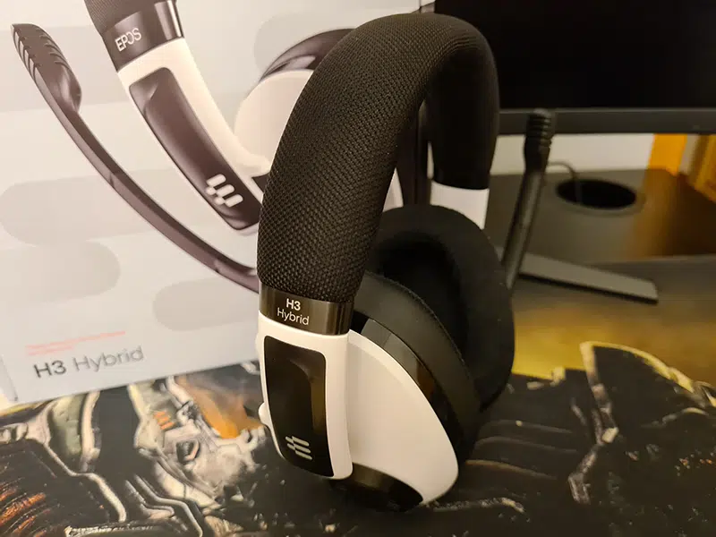

ANÁLISIS CASCOS EPOS H3 HYBRID
Actualmente el mercado de periféricos para audio está muy saturado debido a la cantidad ingente de modelos ofrecidos por diferentes compañías y cada una de ellas trata de hacerse hueco dentro del mundo del entretenimiento digital. Sin embargo, siempre hay quien intenta diferenciarse del resto mediante la calidad de sus productos o alguna característica que la hace especial. En esta entrada comentamos los cascos de la serie H3 de la marca EPOS, en concreto del modelo Hybrid.
Actualmente el mercado de periféricos para audio está muy saturado debido a la cantidad ingente de modelos ofrecid os por diferentes compañías y cada una de ellas trata de hacerse hueco dentro del mundo del entretenimiento digi tal. Sin embargo, siempre hay quien intenta diferenciarse del resto mediante la calidad de sus productos o alguna car acterística que la hace especial. En esta entrada comentamos los cascos de la serie H3 de la marca EPOS, en concreto del modelo Hybrid.
Los auriculares EPOS H3 Hybrid ofrecen con ectividad mediante cable USB/cable consola y conectiv idad Bluetooth simultánea. La diadema ajustable y los auriculares angulares proporcionan un ajuste ergonómico y comodidad de larga duración, mientras que el micrófono del brazo articulado desmontable, que se silencia automáticamente cuando se pliega, proporciona una conversación nítida.
